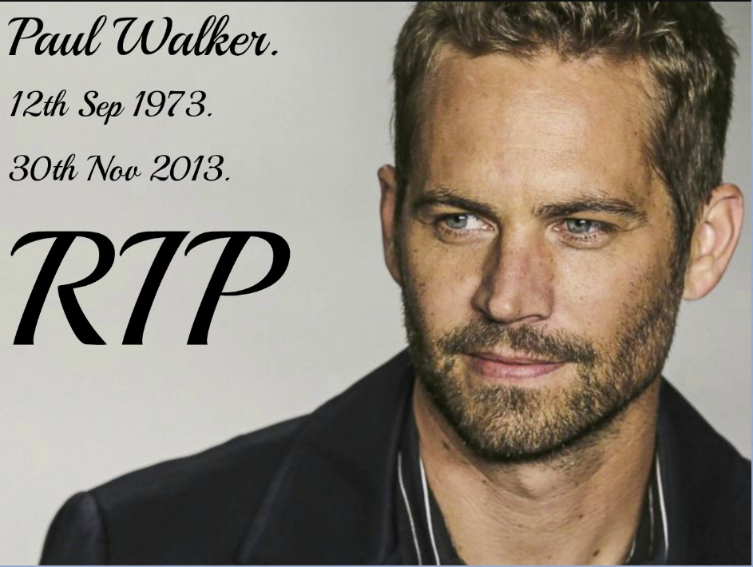
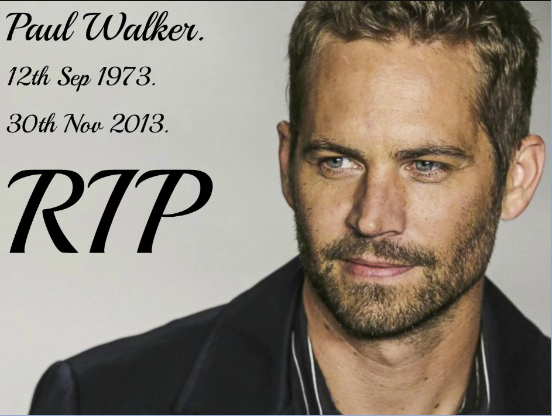

Paul Walker
1973-2013Paul was best known for his role as Brian O'Conner, an undercover detective, in the movie series The Fast and the Furious.
“If you spend any time with a man, you’ll realize that we’re all still little boys.“
“If you spend any time with a man, you’ll realize that we’re all still little boys.“